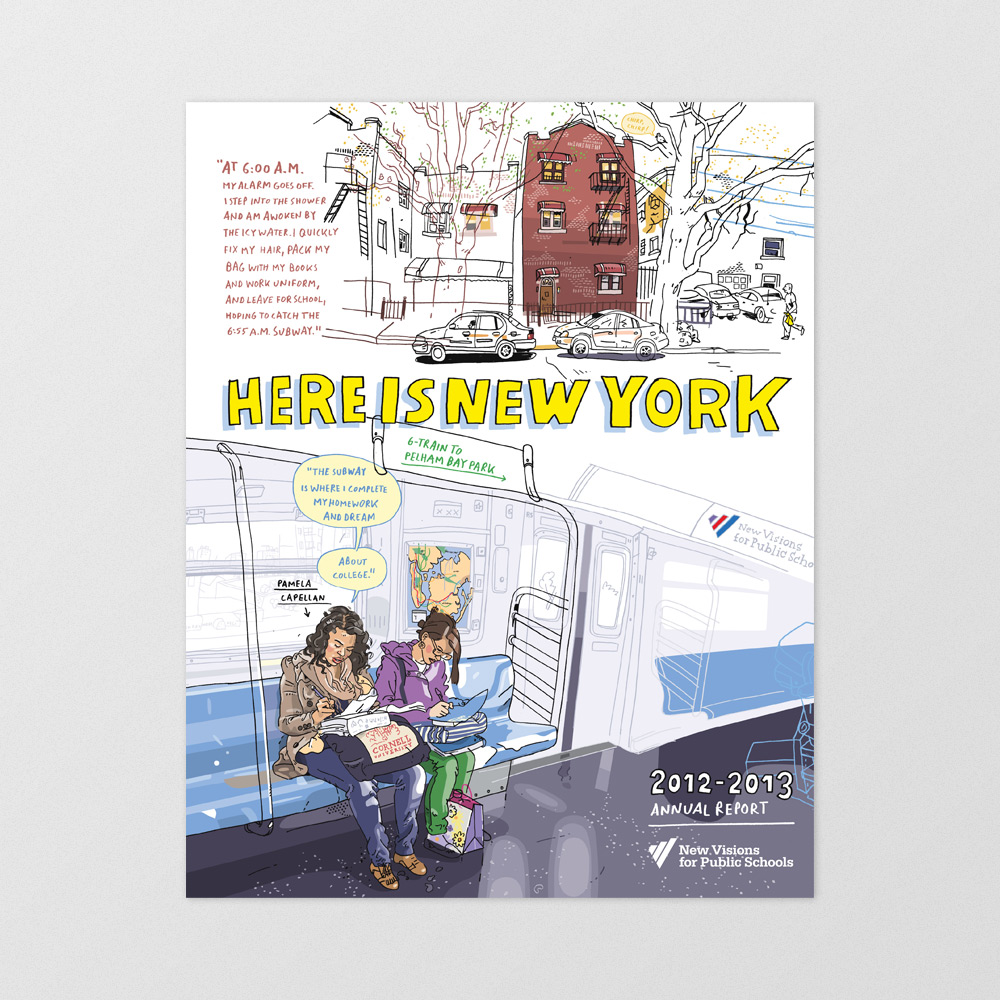
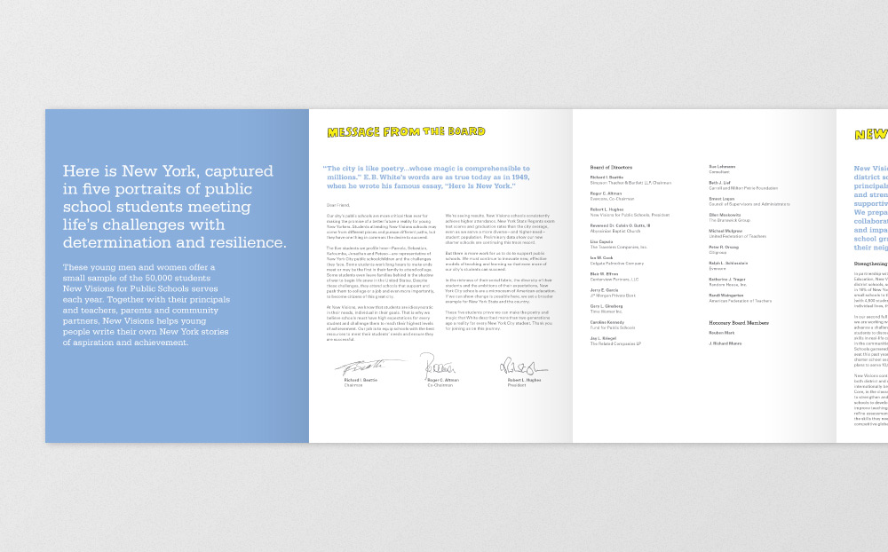
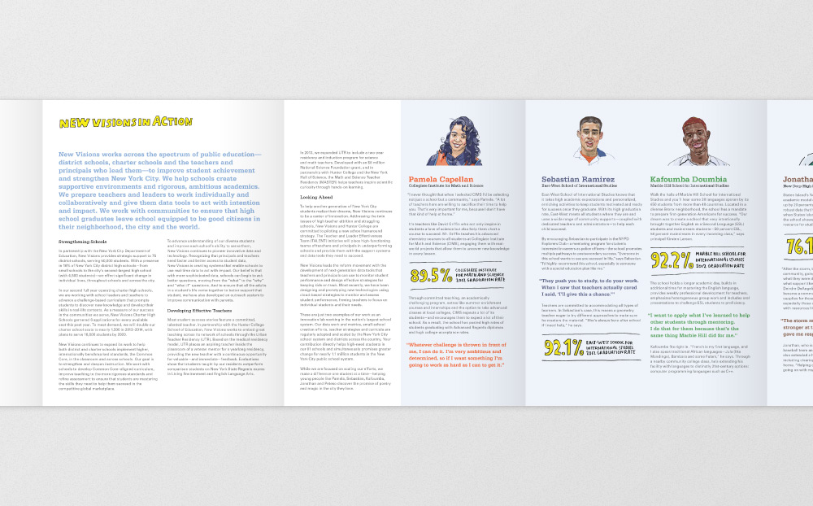
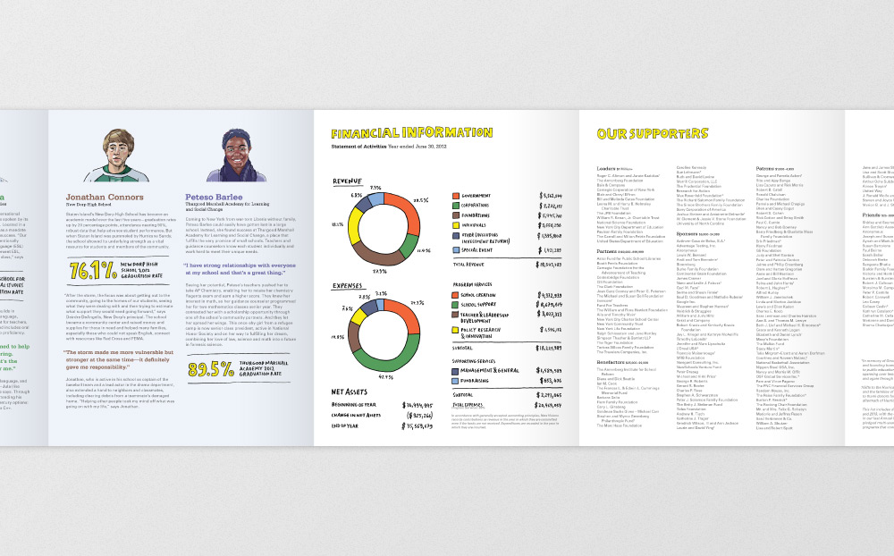
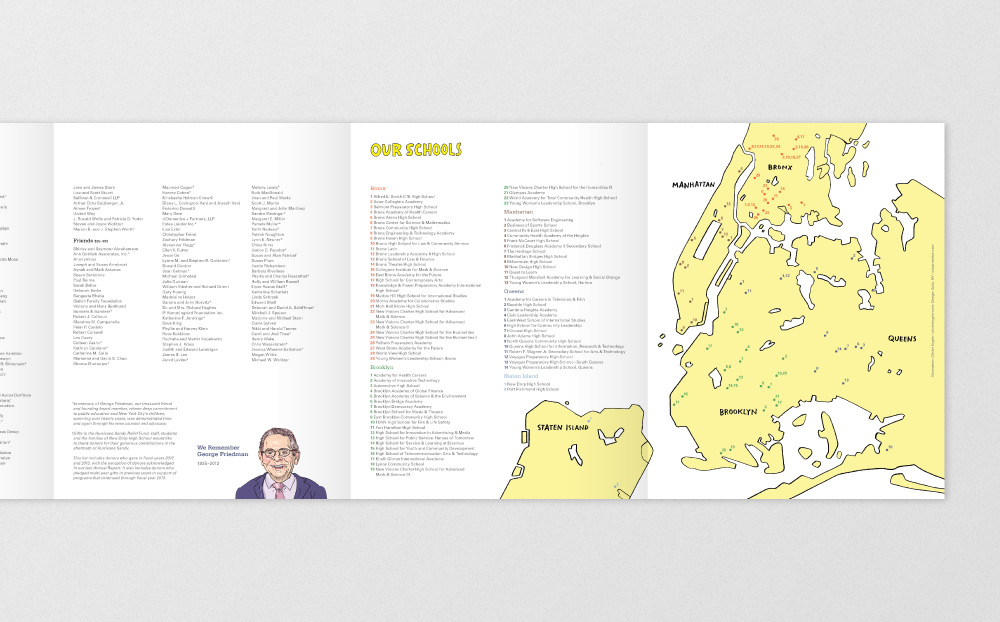

Graphic design
As Senior Designer at Suka Creative, I designed New Visions for Public Schools' Here Is New York: 2012-2013 Annual Report. The double-sided, twelve-panel, accordion-fold book followed the lives of five inspiring New York City students, hand-drawn by London-based reportage illustrator, Olivier Kugler.




